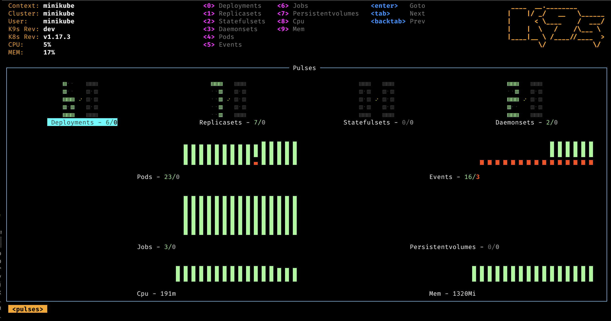
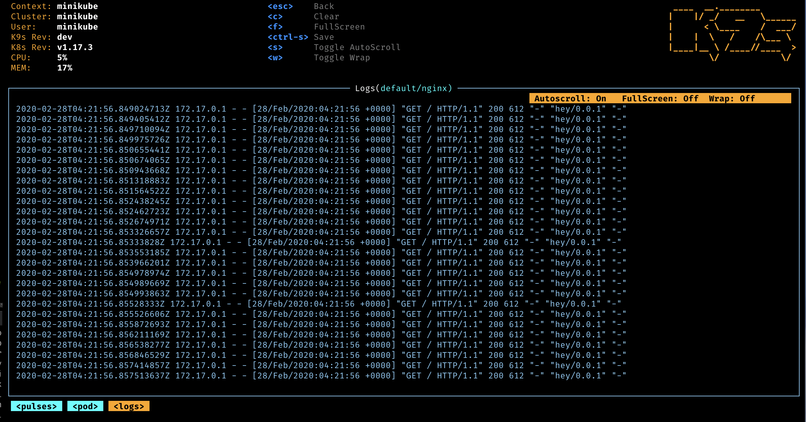
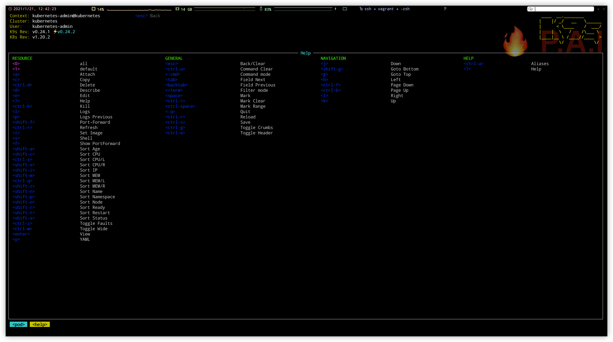

通常情况下，我们自行部署
k8s集群之后，要么使用kubectl命令做集群管理，要么使用bashbroad的UI管理界面来管理集群。最近，发现了一个基于终端且比较好用的项目，可以让我们快速查看、导航、观察并解决日常我们使用Kubernetes中的一些问题，这就是k9s项目。
1. 工具介绍
日常使用终端的你，可谓是一件利器！
k9s 是一个基于 curses 的全屏终端 UI 管理工具，可以与 Kubernetes 集群进行交互，可以观察系统资源，在各种资源之间切换，检查清单、日志、监控事件并执行 Pod 等，从而确保桌面空间不至于被大量终端窗格所占据。
k9s 会以特定时间间隔监控 Kubernetes 资源，默认为 2 秒，并允许查看自己集群中的内容。它可以一目了然地提供了运行中 Pod、日志和部署的可视化视图，以及对 Shell 的快速访问。以下是该工具的主要特性：
- 信息触手可及
- 跟踪
Kubernetes集群中运行的资源的实时活动 - 处理
Kubernetes标准资源和自定义资源定义
- 跟踪
- 集群指标
- 跟踪与
Pod，容器和节点等资源关联的实时指标
- 跟踪与
- 高级特性
- 提供标准的集群管理命令，例如日志，扩展，端口转发，重启
- 定义自己的命令快捷方式，以通过命令别名和热键快速导航
- 支持插件扩展
k9s来创建属于自己的集群操作管理命令 - 强大的过滤模式，允许用户向下钻取并查看与工作负载相关的资源
- 外观可定制
- 通过
K9s皮肤定义自己的外观 - 自定义/安排要按资源显示的列
- 通过
- Pulses-集群事务状态的顶级仪表板

- XRay-挖掘群集资源并查看其依赖性

- Pods -列出你的 Pods 状态和资源消耗

- Logs-查看容器日志并与之交互

- RBAC-查看您的集群上的授权的用户、方式等

2. 安装方式
安装起来虽然比较简单，但是有点不怎么给力！
K9s 采用 Go 语言开发，可运行于 Linux，macOS 和 Windows 平台。K9s 安装非常的简单，官方已经为我们提供了各平台的二进制安装包，只需下载对应版本即可。
- MacOS
# Homebrew
$ brew install derailed/k9s/k9s
- Linux
# LinuxBrew
$ brew install derailed/k9s/k9s
# PacMan
$ pacman -S k9s
- Build
# Clone the repo
$ git clone https://github.com/derailed/k9s.git
# Build and run the executable
$ make build && ./execs/k9s
- Docker
# 指定k8s的配置文件路径
$ docker run --rm -it -v $KUBECONFIG:/root/.kube/config derailed/k9s
# k8s配置文件的默认路径
$ docker run --rm -it -v ~/.kube/config:/root/.kube/config derailed/k9s
3. 使用方式
k9s 和 dashboard 可以理解为 vim 和 idea 之间的关系！
K9s 自带有一些参数，可以使用该参数以不同的配置启动该工具，比如你需要看 Pod 相关的信息。
- 命令行启动参数
# 列出所有可用的CLI选项
$ k9s help
# 获取有关K9s运行时的信息
$ k9s info
$ k9s info logs
$ k9s info configs
# 在给定的名称空间中运行
$ k9s -n mycoolns
# 运行K9s在pod视图中启动
$ k9s -c pod
# 以只读模式启动K9s；该模式禁用所有修改命令
$ k9s --readonly
- 界面操作快捷键
| 快捷键命令 | 对应含义说明 | 举例说明 |
|---|---|---|
Ctrl-a |
显示所有可用的资源别名 | |
? |
显示键盘快捷键和帮助 | |
<Esc> |
退出视图/命令/过滤器模式 | |
:alias_name |
按名称复数/单数/简称或别名查看资源 | :po |
:alias_name namespace |
在给定的名称空间中按名称查看资源 | :po fred_ns |
/filter |
筛选出给定筛选器的资源视图 | /bumblebeetuna |
/-f filter |
模糊过滤器给定一个过滤器的资源视图 | /-f mik |
/-l label-selector |
根据标签过滤资源视图 | /-l app=fred |
d, y, e, l,… |
键映射描述，查看 YAML，编辑，查看日志 | |
:ctx |
查看并选择另一个 Kubernetes 上下文 | :ctx |
:ctx + context_name |
按名称切换到给定上下文 | :ctx fred_context |
:ns |
查看并选择另一个名称空间 | :ns |
:screendump, :sd |
查看所有保存的资源 | |
Ctrl-d |
删除资源（TAB / ShiftTab 和 ENTER 确认） | |
Ctrl-z |
切换错误缩放以直接跳转到有问题的资源 | |
Ctrl-w |
切换宽栏显示 | |
Ctrl-k |
杀死资源（无确认对话框！） | |
:q, Ctrl-c |
退出 K9s 工具 |

4. 简单使用
主要演示一些常用的命令参数的效果！
启动后，会弹出 k9s 的基于文本的用户界面。在没有指定命名空间标志的情况下，它会向你显示默认命名空间中的 Pod。通过快捷键来导航 k9s，可以随时使用方向键和回车键来选择列出的项目。可能会注意到 k9s 设置为使用 Vim 命令键，包括使用 J 和 K 键上下移动等。
- k9s
0：显示在所有命名空间中的所有 Podd：描述所选的 Podl：显示所选的 Pod 的日志y：查看 YAML 文件e：编辑 YAML 文件d：查看键映射描述:svc：跳转到服务视图:deploy：跳转到部署视图:namespace：跳转到命名空间视图:cj：跳转到 cronjob 视图，查看集群中计划了哪些作业:rb：跳转到角色绑定视图，用于基于角色的访问控制(RBAC)管理
- k9s info
- 运行该命令，会告诉我们该应用程序要在哪里找它的配置文件。
$ k9s info
____ __.________
| |/ _/ __ \______
| < \____ / ___/
| | \ / /\___ \
|____|__ \ /____//____ >
\/ \/
Configuration: /Users/jess/.k9s/config.yml
Logs: /var/folders/5l/xxx/T/k9s-jess.log
Screen Dumps: /var/folders/5l/xxx/T/k9s-screens-jess
# 查看k9s的日志
$ tail -f /var/folders/5l/xxx/T/k9s-jess.log
# 进入k9s的调试模式
$ k9s -l debug
- k9s -n namespace
- 通过指定
namespace命名空间，我们可以将注意力集中在给定的命名空间上。
- 通过指定
5. 配置文件
配置文件中主要定义一些使用上面的默认方式
K9s 将其配置保存在主目录 $HOME/.k9s 中的 .k9s 目录中。主要配置文件名为config.yml 并存储各种 K9s 特定位。k9s 将更新此文件以存储当前视图和名称空间信息。
# config.yml
k9s:
# Represents ui poll intervals. Default 2secs
refreshRate: 2
# Set to true to hide K9s header. Default false
headless: false
# Indicates whether modification commands like delete/kill/edit are disabled. Default is false
readOnly: false
# Toggles icons display as not all terminal support these chars.
noIcons: false
# Logs configuration
logger:
# Defines the number of lines to return. Default 100
tail: 200
# Defines the total number of log lines to allow in the view. Default 1000
buffer: 500
# Represents how far to go back in the log timeline in seconds. Default is 5min
sinceSeconds: 300
# Go full screen while displaying logs. Default false
fullScreenLogs: false
# Toggles log line wrap. Default false
textWrap: false
# Toggles log line timestamp info. Default false
showTime: false
# Indicates the current kube context. Defaults to current context
currentContext: minikube
# Indicates the current kube cluster. Defaults to current context cluster
currentCluster: minikube
# Persists per cluster preferences for favorite namespaces and view.
clusters:
cooln:
namespace:
active: coolio
favorites:
- cassandra
- default
view:
active: po
featureGates:
# Toggles nodeshell support. Allow K9s to shell into nodes if needed. Default false.
nodeShell: false
# Provide shell pod customization of feature gate is enabled
shellPod:
# The shell pod image to use.
image: killerAdmin
# The namespace to launch to shell pod into.
namespace: fred
# The resource limit to set on the shell pod.
limits:
cpu: 100m
memory: 100Mi
# The IP Address to use when launching a port-forward.
portForwardAddress: 1.2.3.4
minikube:
namespace:
active: all
favorites:
- all
- kube-system
- default
view:
active: dp
6. 总结说明
对于日常经常需要操作 k8s 的运维人员来说却是很有帮助！
除了上述的功能以外，k9s 还有其他比较实用的功能，比如支持自建命令别名、自定义热键方式、支持自定义插件、还支持自定义终端界面显示以及资源显示顺序和组合。这些在官网中，给出了一些简单的示例说明和配置方式，基本可以做到，看了之后就可以自行 DIY 了。
了解你的工具并掌握做事情的“硬道理”很重要。还有一点很重要的是要记住，就管理而言，重要的是要更聪明地工作，而不是更努力。使用 k9s，就是我践行这个目标的方法。
7. 参考链接
授人玫瑰，手有余香！